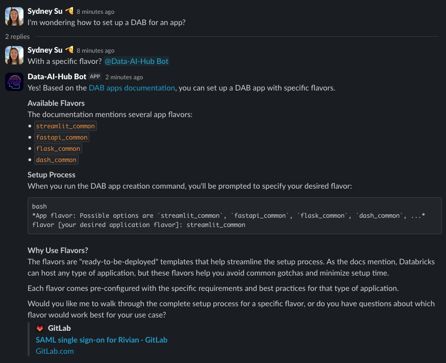
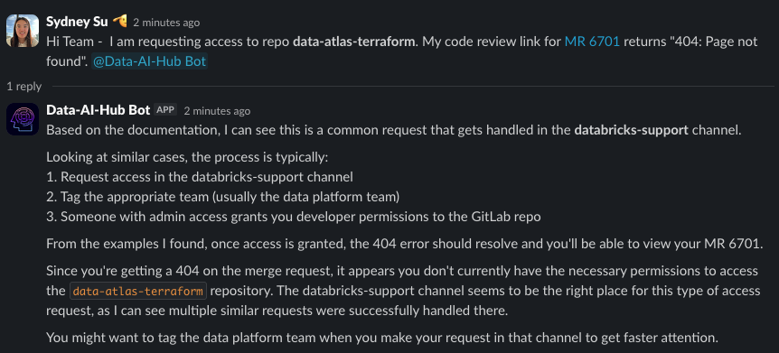
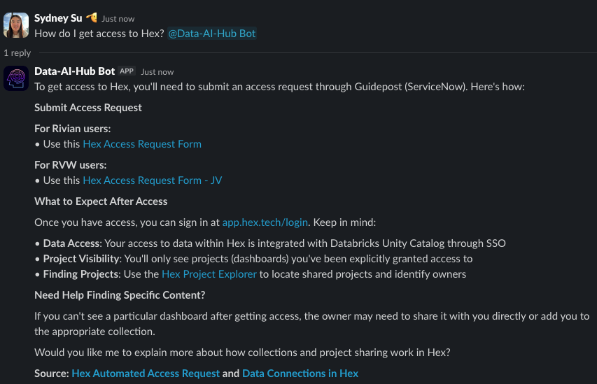
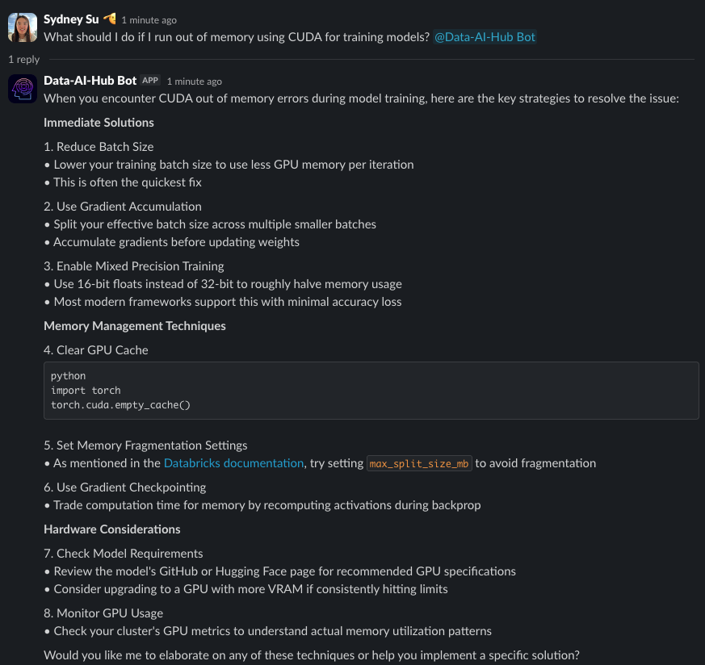
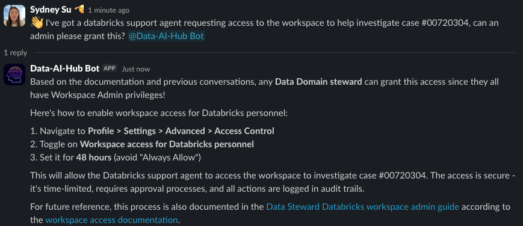

Demo
Real examples of the Data-AI-Hub Agent in action
GitLab Documentation Retrieval
Helping developers contribute to the data-atlas-terraform repository
The agent provides guidance for setting up a DAB with a specific flavor in the data-atlas-terraform repository.
Historical Slack Retrieval
References previous conversations in Slack support channels
The agent provides a contextually relevant response about data-atlas-terraform repository access.
Confluence Documentation Retrieval
Accelerating the process of onboarding new team members
The agent provides naviagation to Hex access request forms and provides a link to the relevant Confluence page.
Databricks Knowledge Base Article Retrieval
Faster developer debugging resolution through knowledge base articles
The agent provides accurate technical support linking back to the relevant Databricks Knowledge Base articles.
Contextual Learning & Memory
Learning from previous conversations and mimicking expert responses
The agent correctly references previous resolved Slack conversations to provide consistent, high-quality support.
Previous Thread Context
Agent references a conversation from a week ago to provide relevant context
Expert Response Mimicking
Agent learns and mimics Vadivel's response patterns and expertise
